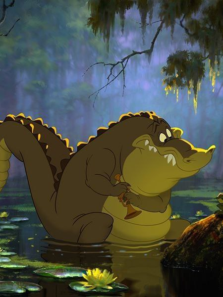
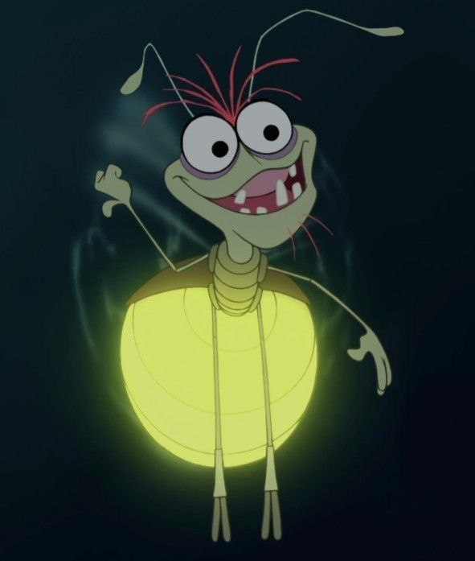
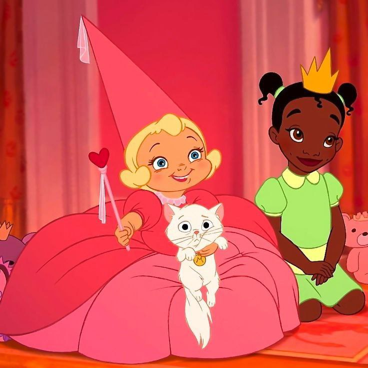

<!DOCTYPE html>
<html>

<head>
  <meta charset="utf-8">
  <meta name="viewport" content="width=device-width">
  <title>replit</title>
  <link href="style.css" rel="stylesheet" type="text/css" />
  <link rel="preconnect" href="https://fonts.googleapis.com">
  <link rel="preconnect" href="https://fonts.gstatic.com" crossorigin>
  <link href="https://fonts.googleapis.com/css2?family=Open+Sans:wght@500&family=Playfair+Display:wght@700&display=swap" rel="stylesheet">
</head>

<body>

  </body>
  </html>

<h1>Друзі</h1>
<h3> Луї, Рей, Шарлотта</h3> 
<a
  href="photo_2023-11-17_18-46-52.jpg">
    
 <a
   <a
     href="photo_2023-11-17_18-46-57.jpg">
       
    <a
       <a
        href="photo_2023-11-17_18-36-33.jpg">
          
       <a
<ol class="text"><div class="xem" >
  <p>Луї дуже добре грає на інструменті. Дуже відданий, веселий і є почуття гумору.</p></div>
  <div class="xtwm">
  <p>Рей дуже балакучий, добрий, закоханий у зірку, але на жаль наприкінці він помер...</p></div>
    <div class="xkm">
      <p>Тіана з Шарлоттою дружать із дитинства. Вони познайомилися через те, що мама Тіани шила сукні Шарлотті, і розповідала казки про принців. Дуже віддана подруга, стильно одягатись, і допомогла гарно одягнутися Тіані на бал.</p></div>
  </ol> 
         <div class="test">
         <a href="index.html"><----page1</a>
           </div>
